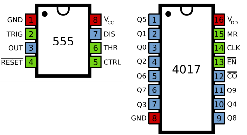
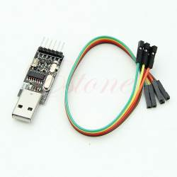

2015-05-12 - Nº 2
Editorial
Depois da excelente receção da primeira Newsletter do altLab, resolvi estabelecer uma periodicidade semanal para a mesma. Algumas novidades foram introduzidas desde a última edição. Foi criado mais um tópico - Ciência e Tecnologia - para abordar artigos que de alguma forma nos irão causar impacto no futuro.
Outra novidade introduzida é a Newsletter passar a estar residente no sistema Documenta do altLab, o que permite a indexação e consulta permanente por parte dos internautas de toda a Newsletter.
As Newsletters, esta, a anterior e as proximas passarão a residir no link.
A Newsletter apresenta uma diversidade entre artigos próprios e artigos publicados por outros internautas e que se destacam pela criatividade, novidade ou apenas curiosidade dos mesmos.
Esta Newsletter tem os seguintes tópicos:
- Novidades da Semana
- Ciência e Tecnologia
- Cursos MOOC
- Modelos 3D
- Open Source
- Circuitos
- Artigo do Maker
- Compras
- Ferramentas
Nesta Newsletter falaremos acerca do OpenSCAD, de Ferros de Soldar, de um circuito que é a base para a construção de diversos circuitos interessantes e mais algumas surpresas. Esta semana não temos Gadget para analisar.
 João Alves ([email protected])
João Alves ([email protected])
O conteúdo da Newsletter encontra-se sob a licença  Creative Commons Attribution-NonCommercial-ShareAlike 4.0 International License.
Creative Commons Attribution-NonCommercial-ShareAlike 4.0 International License.
^
TI lança o MSP432 - ARM 32bits - em LaunchPad por um custo muito baixo
"The MSP432P401R LaunchPad enables you to develop high performance applications that benefit from low power operation. It features the MSP432P401R which includes a 48MHz ARM Cortex M4F, 95uA/MHz active power and 850nA RTC operation, 14-bit 1MSPS differential SAR ADC and AES256 accelerator."
CHIP - O Primeiro computador de 9 Dolares
"C.H.I.P. does computer things. Work in LibreOffice and save your documents to C.H.I.P.'s onboard storage. Surf the web and check your email over wifi. Play games with a bluetooth controller. With dozens of applications and tools preinstalled, C.H.I.P. is ready to do computer things the moment you power it on."
-
"HispaBrick Magazine started in 2008 as an initiative of some Spanish AFOLs in order to preserve the best MOCs and articles that were published in their community for 'posterity'."
SNEAK PEEK ON THE NEW, WEB-BASED ARDUINO CREATE
"We always stress the fact that Arduino is not only a matter of hardware. Arduino has two other important pieces, the software and the community. We recently wrote about an improved Arduino Software (IDE) and how we moved from nightly builds to hourly builds, thanks to the help of our programmers and contributors. Now we want to add more power to the community and its capacity to create amazing projects. In the past year we have been incredibly busy designing a new Arduino web-based tool, Arduino Create. It's an important step in the Arduino ecosystem that (we hope) is going to change the way you interact with your projects and the community."
^
Improving transistors that drive flexible electronics
"A revolution is coming in flexible electronic technologies as cheaper, more flexible, organic transistors replace expensive, rigid, silicone-based semiconductors, but not enough is known about how bending thin-film electronic devices affects performance. A new study provides answers."
Neural network chip built using memristors
"Memristors have relatively simple behavior: they're a type of circuitry where the present resistance to current is a product of the currents that have flowed through them in the past. The more current that goes through, the easier it will travel through in the future. Interest in memristors comes in part from the fact that the resistance persists even after current is turned off, making them a possible option for non-volatile memory."
Tips and designs for 3D printing electronics with F-Electric
"Since we've started shipping, I wanted to share some tips and tricks with you, so you have the best possible F-Electric printing experience. First, the basics many people have asked what print settings to use, do I need a heated bed, and will it bond well to PLA?"
New chip architecture may increase qubits in a future quantum computer
"Researchers at the Georgia Tech Research Institute and Honeywell International have developed a new ion trap architecture (using ions trapped inside a vacuum chamber and manipulated with lasers) that could increase the density of qubits in future quantum computers."
^
- Modelling and Simulation using MATLAB - Começa a 21 Maio
- An Introduction to Interactive Programming in Python (Part 1) - Começa a 22 Maio
- Concepts in Game Development (GamesDev) - Começa a 25 de Maio
- Mobile Robotics (ROBO) - Começa a 25 de Maio
- Programming for Everybody (Python) - Começa em Junho
- Begin Programming: Build Your First Mobile Game - Começa em Junho
- An Introduction to Interactive Programming in Python (Part 2) - Começa em Julho
 ^
^
Com a disponibilidade de ferramentas que permitem dar azo a nossa imaginação na criação de peças 3D e espaços como o thingiverse para as publicar, esta rubrica apresenta alguns modelos selecionados que poderão ser úteis.
Swiss Army style keyring V2 with thumbnail cutouts (http://www.thingiverse.com/thing:98427)
The Swiss Army style keyring with cut outs.
PCB Workstation with Articulated Arms (http://www.thingiverse.com/thing:801279)
This PCB holder is a perfect workstation to make stable connections to single pins of electronic components on your Printed Circuit Board.
Solder Fume Extractor (http://www.thingiverse.com/thing:652940)
A simple (parametric) solder fume extractor.
 ^
^
OpenSCAD - The programmers Solid 3D CAD Modeller
Este software encontra-se disponível em http://www.openscad.org/
O OpenSCAD é uma aplicação que permite definir peças em 3D com base na programação. Trata-se de uma ferramenta muito útil para quem desenha e imprime peças em 3D e que pode ser conjugada com outras ferramentas para fazer modelos 3D com base em modelos 2D.
No passado mês de Março foi lançada a versão 2015.03 que apresenta um conjunto de alterações e correções que permitem tornar esta ferramenta ainda mais potente. Destas alterações destacam-se ao nível da linguagem os módulos text() para texto 2D, o modulo offset() para offsets 2D assim como a otimização/melhoramento de diversas funções como a surface(), min() e max() entre outras. Ao nível da aplicação o aspeto foi bastante melhorado e foram introduzidas formas de exportar para SVG e AMF. Permite igualmente a edição de múltiplos ficheiros em todas as plataformas.
Esta ferramenta é muito útil para descrever de forma exata um objeto.
Vamos supor que se pretende descrever uma alavanca com 8mm de diâmetro e com um manípulo redondo de 15mm de diâmetro. Deve ter 10cm de comprimento.
union() {
cylinder(d=8, h=100);
translate([0,0,100])
sphere(d= 15);
}
Existem já disponíveis um conjunto diverso de bibliotecas que nos ajudam a usar o OpenSCAD de forma ainda mais rápida. Exemplos disso são as bibliotecas nutsnbolts e a MCAD A primeira permite criar de forma simples Porcas e parafusos com rosca. A segunda permite entre outras coisas criar rodas dentadas.
Por outro lado e com algumas limitações existe também uma versão online escrita em JavaScript chamada OpenJSCAD que permite construir os modelos online e descarregar o objeto produzido em diversos formatos. Também o Thingiverse - plataforma de disponibilização de objetos 3D - permite a criação de objetos configuráveis através de um programa escrito em openscad. Esta funcionalidade será abordada numa Newsletter futura.
Link úteis:
- OpenSCAD CheatSheet v2015.03
- OpenSCAD User Manual
- How to use Openscad (1), tricks and tips to design a parametric 3D object
- MakerBlock's OpenSCAD Tutorial Series
- OpenScad beginners tutorial
 ^
^
Aqui é apresentado um circuito simples que poderá ser construído com componentes.
Sequenciador 555 Simples
Este circuito serve de base para um enorme conjunto de circuitos que vão desde led chasers, Knight Rider, Roletas Eletrónicas, Semáforos, etc. Vamos apresentar aqui dois deste tipo de circuitos.
O IC 555 é muito conhecido por ter sido um dos primeiros Integrados a ser inventado. Inventado em 1971 pela empresa Signetics tem até sido usado até aos dias de hoje. Este Integrado tem três formas de funcionamento conhecidas: Mono-Estável, A-Estável e Bi-estável. No circuito que iremos construir irá funcionar em modo A-Estável.
Neste modo o circuito coloca no seu pino de saída um conjunto de pulsos com uma determinada frequência. A Frequência é determinada pelos valores das resistências e do condensador usados no circuito.
O IC 4017 também designado por "Decade Counter" coloca um pino em cima numa sequência à medida que lhe são dados pulsos de relógio.
Neste circuito existe uma resistência variável que permite ajustar a frequência.
Esquemático
Componentes (BOM):
Para o circuito base:
Opcionalmente para a monitorização da frequência
- 1 x Resistência de 470 Ohm
- 1 x LED 3mm
Para o Circuito do Led Chaser:
- 10 x LEDs 5mm
- 1 x Resistência de 470 Ohm
- Para o Circuito do Knight Rider:
- 6 x LEDs 5mm
- 1 x Resistência de 470 Ohm
- 8 x Díodos 1N4148
Pin-out dos IC

Links de onde foram retirados ou baseados os circuitos:
^
Projeto interessante publicado por um maker.
Espelho de LEDs infinito
Este projeto apresentado pelo Daniel Milesson no instructables mostra como construir um espelho de LEDs infinito. Este artigo foi originalmente publicado neste link pelo seu autor.
Para a construção do espelho são necessários os seguintes itens:
- Uma moldura (Sugestão IKEA Ribba)
- LEDs endereçáveis (ebay)
- Filme de proteção de vidro (ebay)
- Espelho
- Fios
- Controlador de LEDs
- Adaptador de energia para o controlador de LEDs
Desmontar e furar a moldura, depois proceder à pintura a preto.
Colar os LEDS na moldura. Ligar os LEDs uns aos outros. Adicionar pedaços de cola quente para tornar os LEDs difusos.
Adicionar o vidro com o Filme à moldura (com o filme para o lado de dentro).
Adicionar o espelho à moldura. No caso do instructable ele acrescentou uma letra. Para mais detalhes vejam o instructable para se saber como fazer.
Outros artigos interessantes de ler:
PCB future is lightweight, low-cost, and flexible: Product how-to
"In the last ten years, the technology for manufacturing lightweight, flexible PCBs has made huge progress. Lightweight flex circuits are usually associated with materials like Kapton. The use of those materials is typically limited to high-value applications due to price. Fast forward to 2015, and the landscape has changed dramatically. Printed electronics makes the news on a regular basis. We hear about breakthroughs in printing semi-conductors, organic photocells, or triboelectric fabric. What often goes unnoticed is that the underlying circuits - manufactured on low-cost flexible substrates with copper traces - have quietly moved from the lab to the production floor. Printed copper flexible circuits are now routinely manufactured by the kilometre in a reel-to-reel process. As production volumes go up, costs come down."
Soldering Iron Temperature Control PLC Cycle Timer Circuit
"Getting precise temperature control is one of the challenges when working with a regular plug-in soldering iron. The best way to get temperature control is with a high quality soldering station but many people who work with electronics have one or more plug-in soldering irons in their toolboxes."
Reducing Arduino's Power Consumption
"In part 1 of this 3 part series we look at how to use Arduino's built-in sleep modes to drastically cut down on power consumption to help you build projects with longer battery life. In part 2 of this series we will look at how to use power reduction registers and in part three we will look at some other ways to wake an Arduino up from sleep mode."
Maximizing Arduino's ADC Resolution and Accuracy Part 1
"In part 1, of this 3 to 4 part series, we will look at what ADC measurement resolution is and how to maximize it on the Arduino. We will also look at a simple hint to increase Arduino's ADC measurement accuracy. In later parts we will get much deeper into accuracy and how to increase it."
DIY Soldering Robot - Project Completed
"The DIY soldering robot which we have been building in our spare time over the past few months is now working and we have been able to solder some test Raspberry Pi expansion board headers with the machine. Before starting on this robot we looked at the various commercial soldering systems that are available. Wave soldering machines would have been impractical as the connector is on the top side of the board next to the surface mount components. Wave soldering would also coat the full length of the pin in solder which we don't want to do as it would make it more difficult to stack the boards."
 ^
^
Artigos do ebay ou de outras lojas online que poderão ser úteis em projetos.
To TTL USB2.06Pin CH340G Converter for STC Arduino PRO
(http://www.ebay.co.uk/itm/191149156465) - £ 1

- 100% Brand new and high quality.
- Built-in USB to TTL Transfer chip.
- Designed to be used for USB to TTL electronic projects.
- TTL interface output, easy to connect to your MCU.
- Dual 3.3V and 5V Power output, work with 3.3v and 5v target device.
- The mini module is designed specifically for STC download and ARDUINO PRO, supports all series of STC microcomputer with cold start reset button
- Supports WIN7/VISTA/MAC/LINUX(32 bit /64 bit system)
- USB to TTL conversion board used for STC microcontroller download DVD/ hard disk / router /GPS upgrade
- Size:5x1.7cm(approx)
20Pcs NE555P NE555 Timer IC
(http://www.ebay.co.uk/itm/181483129259) - £ 1
- Chip: single-precision timer
- Work mode: unsteady / monostable
- Number of Timers: 1
- Clock external input: No
- Frequency: 500kHz
- Supply Voltage Range: 4.5V to 16V
- Package: DIP
- Number of Pins: 8
- Operating temperature range: 0 ° C to +70 ° C
- SVHC: No SVHC (18-Jun-2012)
- Device Marking: NE555P
- Package Type: DIP8
- Maximum operating frequency: 0.5MHz
- Surface Mount Devices: Through Hole
- Number of channels: 1
- Logic Function Number: 555
10Pcs CD4017 CD4017BE 4017 DIP-16 DECADE COUNTER DIVIDER IC
(http://www.ebay.co.uk/itm/130795050385) - US $1.87
 ^
^
As Ferramentas que usamos no dia-a-dia explicadas ao detalhe.
Ferro de Soldar
Agradeço as preciosas dicas do membro Fernando Carvalho para escrever este artigo.
O ferro de soldar é uma ferramenta manual usada para soldar. Trata-se de uma ferramenta fundamental para fazer ou reparar circuitos eletrónicos. É composto por um elemento que aquece e que permite derreter um material - a solda - que possibilita juntar dois componentes. Existem alguns tipos de ferros de soldar que são usados para diferentes fins:
- Ferro simples
- Ferro sem fio
- Ferro com temperatura ajustável
- Estação de soldadura
- Pinças de Soldar
O ferro simples com uma capacidade de 20 a 40 Watts é habitualmente usado em trabalhos de eletrónica. Este tipo de ferros permite atingir temperaturas na ordem dos 200o.C A esta temperatura a solda consegue derreter e juntar-se aos outros elementos para formar uma ligação solida.
Os ferros sem fio são tipicamente aquecidos através de uma bateria ou através de gás butano. São usados quando não é possível ter eletricidade no local onde se pretende fazer a soldadura. Têm o inconveniente de não serem passiveis de ser regulados da mesma forma que os outros ferros. Tipicamente atingem temperaturas superiores às dos ferros convencionais e como tal não são tão usados para a eletrónica.
Os ferros com temperatura controlada são idênticos aos ferros simples tendo no entanto um elemento que permite sentir a temperatura e regulá-la para a manter estável.
A estação de soldadura tem as vantagens de se ter um maior controle sobre a temperatura. Existem algumas estações de soldadura que têm um sistema de dessoldadura com uma bomba de vácuo que permite a dessoldagem de componentes de forma eficiente.
Por fim as pinças de Soldar são usadas tipicamente para soldar componentes SMD (surface-Mount) com dois terminais. Existem tanto as normais como as que são controladas por uma estação de soldadura.
Nos ferros existem diferentes pontas que podem ser usadas em função do trabalho que se pretende. Tipicamente para soldar componentes eletrónicos usa-se uma ponta de lápis (tem a ver com o formato arredondado e estreito). Este tipo de forma de ponta permite aumentar a precisão do ponto onde se pretende aplicar o calor. Existem também pontas de diversos materiais como porcelana ou ferro, sendo alguns mais robustos que outros.
Dica
Tipicamente as pontas dos ferros de soldar são de cobre eletrolítico, cobertas por um banho (que não é só estanho) que protege e ajuda a soldar, a utilização do fluxo e outros componentes agressivos, contribuem para a oxidação deste banho protetor, que em condições normais deve durar o tempo de vida da ponta, esta sim é que se vai desgastando por debaixo do banho protetor. O químico que pode ser usado para ajudar na soldadura é o "Pez-Louro" (resina de pinheiro), utilizado desde tempos "imemoriais" na arte da latoaria, por não ser ácido tem a vantagem de não corroer nenhum dos intervenientes na soldadura. O "inconveniente" (mau aspeto à vista) com a sua utilização é o resíduo negro resultante do aquecimento durante a soldadura e que fica depositado na ponta de soldar, mas que sai sem esforço, quando esfregado a um papel ou pano de preferência húmido.
Solda
A solda é uma liga metálica composta por dois metais. A chamada solda de chumbo é tipicamente composta por 60% de Estanho e 40% de Chumbo (Sn60Pb40). Tem um ponto de fusão nos 183º C. Existe também a solda de chumbo com 63% de Estanho e 37% de Chumbo (Sn63Pb37). Estas são ambas usadas para a soldadura de componentes eletrónicos.
A solda para soldar componentes deve ser fina e deve ter entre 0,5mm e 0,8mm.
Existe atualmente a solda sem chumbo que é obrigatória de uso na União Europeia, no entanto as ligas usadas tipicamente têm um ponto de fusão 5 a 20º superior ao da Solda com Chumbo dificultando o uso de ferros convencionais para este tipo de solda. É mais difícil a utilização deste tipo de soldas para a soldadura de componentes eletrónicos manualmente daí se recomendar a utilização da Solda com Chumbo juntamente com um sistema de extração de fumos. Na seção Modelos 3D existe um exemplo de um destes equipamentos que pode ser construído por vocês mesmos.
Fita de Dessoldadura
Também chamada por "Solder Wick" esta fita composta por fios finos de Cobre permite remover a solda de uma soldadura. Permite ajudar no processo de soldagem de componentes SMD também removendo a solda em excesso.
Esfregão de metal
Este permite limpar a ponta do ferro de soldar para que os resíduos de solda e de materiais derretidos saiam. Permite que a ponta do ferro atinja temperaturas mais altas.
Em alternativa pode ser usada uma esponja molhada que também permite eliminar os detritos da ponta do ferro.
Bomba de Dessoldadura de Vácuo
Trata-se de uma bomba que permite chupar a solda. O modo de utilização é aquecer a solda (se for de uma placa com solda RoHS juntar um pouco de solda para ajudar no processo) e depois encostar a ponta da bomba e carregar no botão. Este tipo de equipamento permite remover a solda em excesso ou por completo. Poderá ter que ser usada múltiplas vezes.
Óculos de Proteção
Uma vez que podem saltar elementos a alta temperatura, deverá ser usada uma proteção dos olhos sempre que possível.
Braços articulados
Por vezes quando nos encontramos a soldar torna-se difícil segurar nos vários componentes e na solda e no ferro ao mesmo tempo. Por isso existem os braços articulados também designados por "Helping Hands". Na seção Modelos 3D existe um exemplo de um destes equipamentos.
Para mais informações:
- https://learn.sparkfun.com/tutorials/how-to-solder---through-hole-soldering
- http://en.wikipedia.org/wiki/Solder
- https://learn.adafruit.com/adafruit-guide-excellent-soldering/tools
- http://www.instructables.com/id/Uses-of-Different-Soldering-Iron-Tips/
That's all Folks!